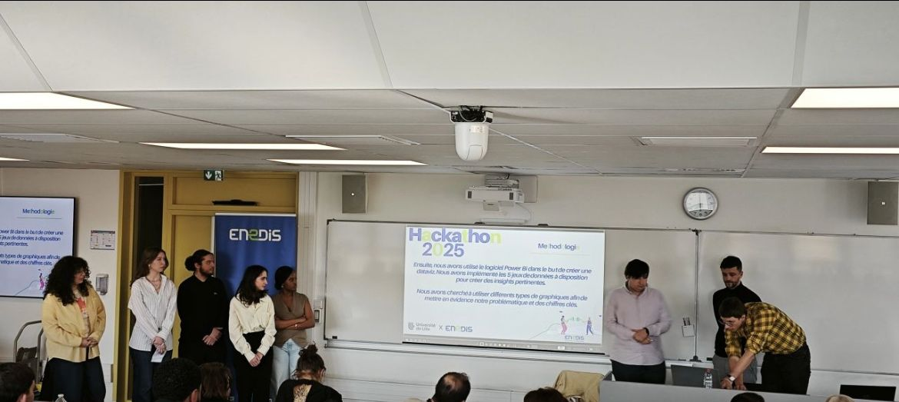

Mon parcours avant le BUT, pourquoi j'ai choisi cette formation, et ce que j'y ai découvert.
↗
La formation
Présentation de la formation
Les 4 unités d'enseignement du BUT STID : Traiter, Analyser, Valoriser, Modéliser.
↗
Présentation de la formation
BUT Science des Données · IUT de Roubaix
Les 4 unités d'enseignement
Le BUT Science des données s'articule autour de 4 compétences fondamentales. Chacune couvre un domaine clé de la science des données, de la collecte au traitement jusqu'à la communication des résultats.
Cliquez sur une unité d'enseignement pour découvrir son contenu.
UE 01
Traiter
Reporting, ETL, bases de données avancées, automatisation statistique.
Communication professionnelle, anglais, marketing, contexte économique.
↗
UE 04
Modéliser
Estimateurs, variances, réduction, modélisation.
↗
Présentation personnelle

Hackathon Enedis 2025 — 1re place
Qui suis-je ?
Ahmed TERIR
Je suis actuellement étudiant en BUT 2 Science des Données, une formation qui vise à former des professionnels capables de collecter, traiter, analyser et valoriser des données.
Cependant, mon parcours n'a pas commencé directement dans le domaine de la science des données. Cette orientation est le résultat d'une réflexion progressive et d'un intérêt grandissant pour les outils numériques et l'analyse de données.
Au fil de mon parcours, j'ai découvert le rôle central des données dans la prise de décision, ce qui m'a motivé à m'investir pleinement dans cette formation.
Cette formation pluridisciplinaire combine des compétences en informatique, en statistique et en communication, afin de répondre aux besoins croissants des entreprises en matière d'exploitation des données.
Temps fort
Hackathon Enedis — 1re place
500 000 lignes de données publiques pour proposer des solutions d'optimisation des infrastructures de recharge électrique. (Power BI, SAS, Excel), présentation devant jury, 1ère place remportée.
PythonSQL / T-SQLSASPower BIQlikOracle Data IntegratorHTML / CSSDAXExcel
Du Bac à la Science des Données
Mon parcours
2022
Baccalauréat Général
L'étape initiale où j'ai consolidé mes bases académiques avant de me tourner vers les sciences sociales et économiques.
2022 – 2024
Licence AES
Licence Administration économique et sociale. J'y ai appris à analyser les politiques économiques et sociales. C'est ici que j'ai réalisé que pour comprendre la société, il fallait savoir maîtriser ses données.
2024 –
BUT Science des Données
Maîtriser la donnée. Ma formation actuelle. Je me spécialise dans l'exploration et la modélisation statistique pour transformer des chiffres bruts en décisions stratégiques.
UE 01 — Traiter les données
UE 01
Traiter les données à des fins décisionnelles
Transformer des données brutes en informations exploitables : reporting, systèmes décisionnels, bases de données avancées et automatisation statistique.
Compétences
Cliquez sur une compétence pour découvrir des exemples d'application
C01
Nettoyer et préparer des données pour l'analyse décisionnelle
Savoir transformer un jeu de données brut en source fiable et exploitable : détection d'anomalies, structuration des indicateurs, restitution via un outil de reporting.
R3.01 — Outils de reportingQlikPower BI
↗
C02
Structurer et mettre en forme une page web
Organiser du contenu en HTML en hiérarchisant l'information, puis le mettre en forme avec CSS pour en améliorer la lisibilité, la cohérence visuelle et l'ergonomie.
R3.03 — Technologies webHTMLCSS
↗
C03
Automatiser des traitements de données via SQL avancé
Maîtriser les mécanismes procéduraux du SQL (curseurs, procédures stockées, triggers) pour automatiser des traitements directement au sein d'un SGBD relationnel.
R3.11 — Complément BDDT-SQLSQL Server
↗
UE 02 — Analyser les données
UE 02
Analyser statistiquement les données
Mobiliser les outils mathématiques et statistiques pour interpréter des données, identifier des structures, valider des hypothèses et produire des prévisions rigoureuses.
Compétences
Cliquez sur une compétence pour découvrir des exemples d'application
C01
Analyser statistiquement des données multivariées
Synthétiser l'information contenue dans un jeu de données multidimensionnel via l'ACP : centrage, réduction, diagonalisation, projection sur axes factoriels.
R3.05 — Algèbre linéaireACPMatrices
↗
C02
Classifier des populations en groupes homogènes
Regrouper des individus selon leurs similarités en mobilisant des méthodes de classification automatique (CAH, proba) pour faire émerger des profils distincts.
RES 4.03 — Classification automatiqueCAHproba
↗
C03
Prévoir l'évolution de données temporelles
Identifier tendances et saisonnalités dans une série chronologique, construire un modèle prédictif et évaluer ses performances sur données réelles.
Valoriser une production en contexte professionnel
Communiquer efficacement à l'écrit et à l'oral, en français et en anglais, restituer des analyses et s'inscrire dans un contexte organisationnel et stratégique.
Compétences
Cliquez sur une compétence pour découvrir des exemples d'application
C01
Communiquer en anglais à l'écrit et à l'oral
Rédiger des mails professionnels, corriger des échanges formels et participer à des débats oraux en anglais pour développer une aisance en contexte international.
Synthétiser des travaux académiques ou des rapports de stage et les présenter à l'oral en équipe, en respectant les codes de la communication organisationnelle.
R4.05 — Communication organisationnellePrésentation orale
↗
C03
Analyser l'environnement stratégique d'une organisation
Mobiliser les outils du marketing stratégique (SWOT, PESTEL) pour évaluer l'environnement interne et externe d'une organisation et éclairer la prise de décision.
R3.10 — MarketingSWOTPESTEL
↗
UE 04 — Modéliser les données
UE 04
Modéliser les données dans un cadre statistique
Construire des modèles pour représenter des populations, estimer des paramètres, effectuer des changements de variables complexes et évaluer la fiabilité de nos résultats.
Compétences
Cliquez sur une compétence pour découvrir des exemples d'application
C01
Modéliser des données dans un cadre statistique
Construire un modèle de régression linéaire multiple, interpréter ses coefficients et évaluer sa qualité prédictive sur des données réelles.
Formaliser un plan de sondage, calculer des estimateurs (moyenne, proportion, total) et leurs variances pour représenter rigoureusement une population à partir d'un échantillon.
R3.EMS.10 — Techniques de sondageEstimateursIC 95%